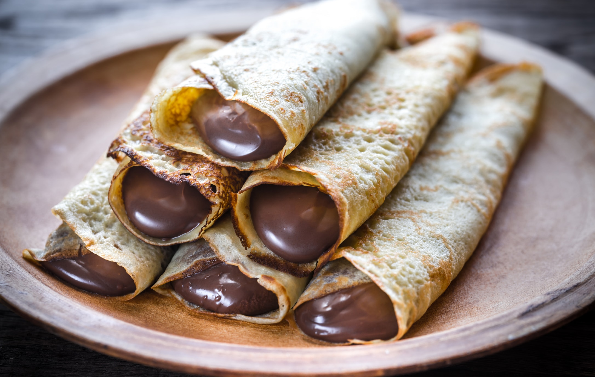
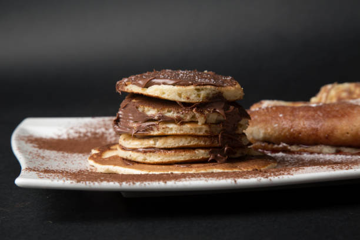

Palacsinta
Kutatások szerint a palacsinta, még az ókori rómából származhatott, melyet kerek kövön, vagy, --egyes legendák szerint--, bronzpajzson sütötték. Az ekkori palacsinta összetevője lisztből, vízből és sóból állt. Hosszú eltarthatóságának köszönhetően, nagyon fontos szerepet játszott. A legelső receptet 1439-ben készítették. 1994-ben Rochdale-ben, készítették el a világ legnagyobb palacsintáját, melynek átmérője 15 méter, súllya 3 tonna és kalória tartalma pedig 2 millió volt.

Hozzávalók:
- 20 dkg liszt
- 2db tojás
- 3 dl tej
- 2 dl szénsavas ásványvíz
- 1 csip só
- 0.75 dl olaj a sütéshez

Elkészítés:
- öntsük keverő tálba a tejet, majd adjuk hozzás az egy csipet sót, olajat, tojást és alaposan keverjük össze.
- Mérjük ki hozzá a lisztet, majd addig keverjük amíg sűrű krém szerű tészta nem lesz a keverékből, utána öntsük hozzás a szódát, vagy a szénsavas ásványvizet.
- Kezdük el keverni a tésztát, itt fontos hogy a tésztának nem szabad csomósnak lennie, azt miután megkevertük, hagyjuk állni egy olyan 10-15 percet.
- Öntsünk egy kevés forró olajat a serpenyőbe (az elsőnél szükséges, de a többinél nem) és öntsünk kisebb merőkanálnyi adagot tésztából. Hagyjuk hogy szétterüljön a serpenyőben.
- Süssük ki egyenként a palacsintákat mindkét oldalukon.
- Ízlésnek megfelelő töltelékkel megtölthetjük és feltekerhetjük, vagy hajtogathatjuk. Töltelékként nagyon illik hozzá a nutella, de bármilyen tölteléket belerakhatunk.